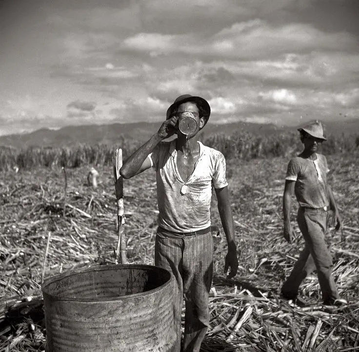
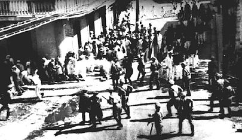
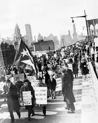
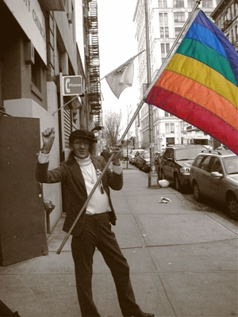
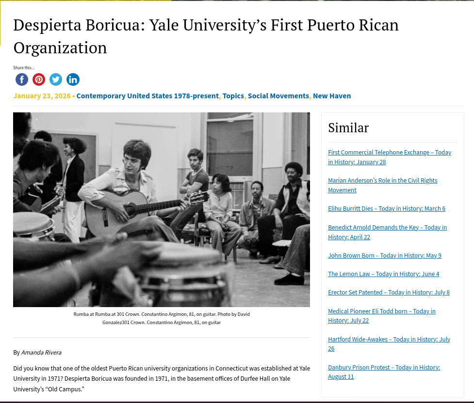
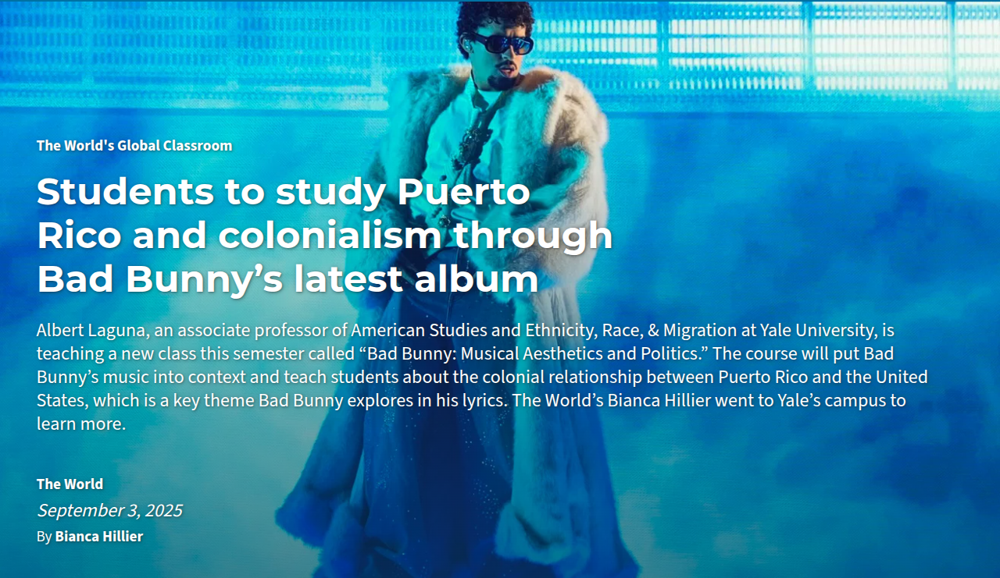
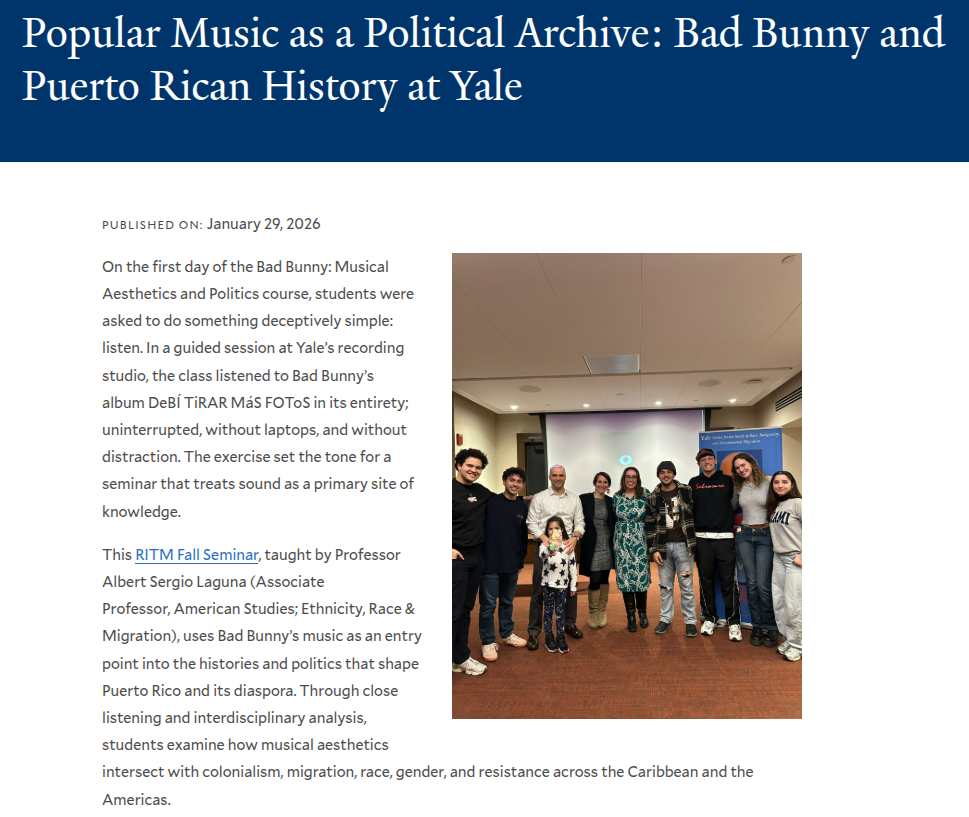

Welcome to DB Yale | Yale's Puerto Rican Student Organization
Explore our initiatives, engage with our community, and celebrate culture and activism.
Section 1
Education & Community Empowerment
DB prioritizes knowledge-sharing at the local level. By partnering with community members and leaders, DB fosters an environment where learning is co-created and everyone's voice is valued.

Section 2
Cultural Preservation & Representation
Celebrating the rich histories and traditions that shape our identities. DB highlights underrepresented voices, ensuring cultural narratives remain alive and vibrant in academic and public discourse.

Section 3
Critical Analysis of Sociopolitical Issues
DB pushes for discussions about pressing social and political challenges, inviting the community to question, analyze, and propose solutions.

Section 4
Collaborative Action
DB unites activists, educators, students, and organizations under a shared mission. We believe in collective efforts amplifying individual strengths and forging new alliances to foster meaningful social change.

Section 5
Inclusivity
Progress demands that we consider overlapping impacts of race, gender, class, ability, and more. DB stands for an inclusive future where policies and conversations respect every perspective.

Section 6
Activism & Resistance
Activism and resistance have been central to Puerto Rican identity and struggle, both on the island and diaspora: environmental justice, education reform, and decolonization. Puerto Ricans have continually resisted oppression and fought for sovereignty, dignity, and self-determination.
Movements such as the Grito de Lares (1868), student protests at the University of Puerto Rico, and decades of struggle against the Navy's occupation of Vieques exemplify the resilience of the Puerto Rican people. Grassroots organizations, artists, and activists continue to challenge injustices.
DB in the Press

Historian/Archivist Amanda Rivera on DB's origins and history

Co-Chair on the importance of Puerto Rican Music history at Yale
Bad Bunny, music history, and P FKN R

With an ecstatic semester-duration of 2025 cultural history, Vanessa Diaz and Petra Rivera-Rideau go from Yale speaker note to a Superbowl audience with their published book P FKN R
Festival de Calle Corona — April 2026
New Haven's first Puerto Rican street festival on Crown Street — modeled after San Sebastián in San Juan. Music, vendors, community, and culture, right in our backyard.
See the gallery